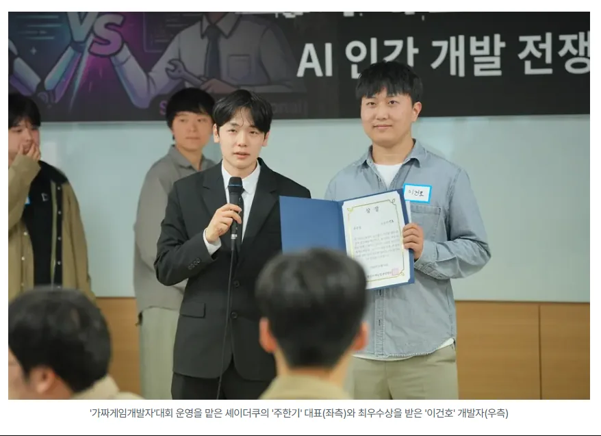
가짜게임개발자: AI 인간 개발 전쟁
멧돼지가 나타났다. 농작물을 지켜라!
5시간 30분 동안 게임 아이디어와 규칙 기획, Unity 게임 플레이 구현, 검증과 수정, 빌드, 시연과 발표까지 혼자 완료해 1위를 차지했습니다.
공개된 WebGL 버전은 대회 당시 제출한 PC 빌드를 기반으로 이후 발견한 버그를 추가 수정한 버전입니다.
PERSONAL PORTFOLIO · 2026
Unity 기반 게임과 VR 콘텐츠를 개발해 왔으며, 현재는 Codex를 개발 과정에 결합해 모바일 게임과 네이티브 Android 앱을 직접 기획하고 출시합니다.
문제 정의부터 구현, 검증, 스토어 출시까지 제품의 전 과정을 수행합니다.
04 · AWARDS & ACTIVITIES

5시간 30분 동안 게임 아이디어와 규칙 기획, Unity 게임 플레이 구현, 검증과 수정, 빌드, 시연과 발표까지 혼자 완료해 1위를 차지했습니다.
공개된 WebGL 버전은 대회 당시 제출한 PC 빌드를 기반으로 이후 발견한 버그를 추가 수정한 버전입니다.
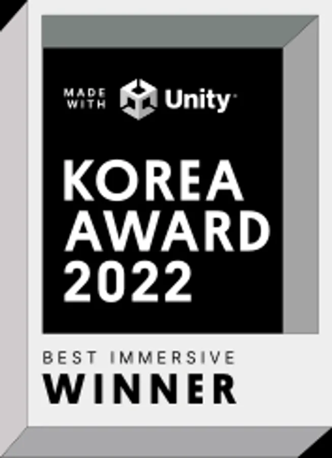
Unity 개발자로 참여한 의료 교육 프로젝트 Medicrew VR이 Unity Korea Award 2022 Best Immersive Industry를 수상했습니다.
05 · PROFESSIONAL EXPERIENCE
AI 도입 이전부터 쌓아온 제품 개발 기반
간호 실습을 위한 의료 VR 시뮬레이션 플랫폼 개발에 참여했습니다.
Unity · C# · XR Interaction Toolkit · Photon Fusion · WebGL · Meta Quest
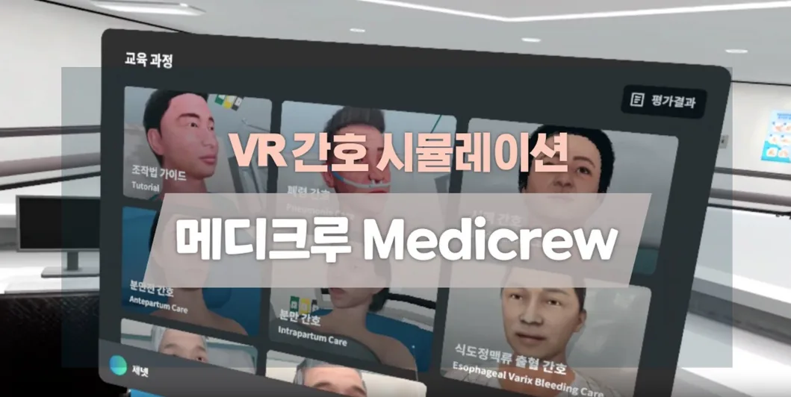
06 · EARLIER PROJECTS
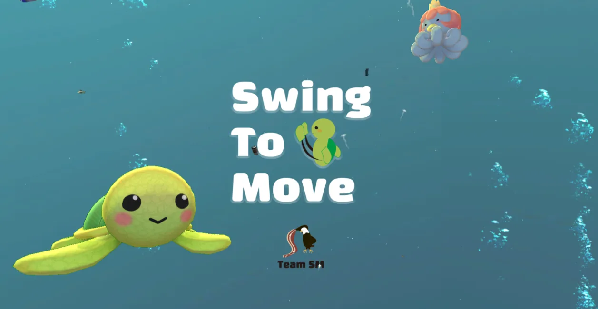
팔을 흔들어 바닷속을 이동하고 장애물을 피하며 경쟁하는 Meta Quest용 캐주얼 멀티플레이 VR 게임입니다.
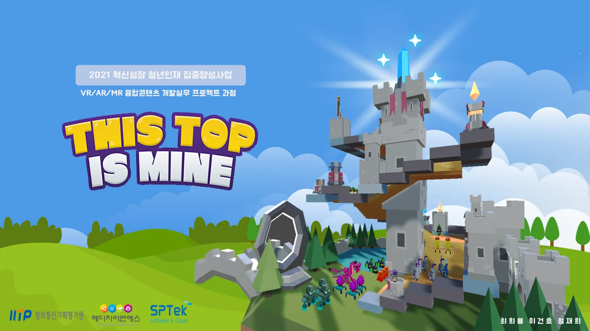
AR Foundation과 Photon을 사용해 실제 공간에 타워를 배치하고 방어하는 Android AR 멀티플레이 게임입니다.
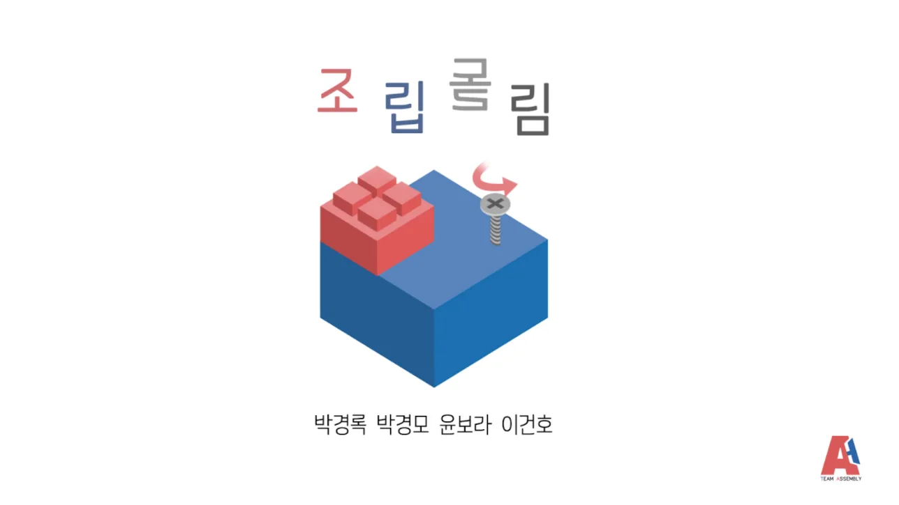
HoloLens 2와 MRTK를 사용해 컴퓨터 부품 조립 과정을 체험하는 MR 교육 콘텐츠입니다.
07 · ABOUT
작은 아이디어도 실제 사용자가 만날 수 있는 제품으로 완성합니다. AI는 결과물을 대신 만드는 장식이 아니라 구현 속도와 검증 범위를 넓히는 개발 파트너로 사용합니다.
방향 결정과 구조, 코드 검토, 최종 품질과 출시는 직접 책임집니다.
01 · FEATURED PROJECT
AI와 함께 개발하고 Google Play에 출시한 Unity 모바일 게임
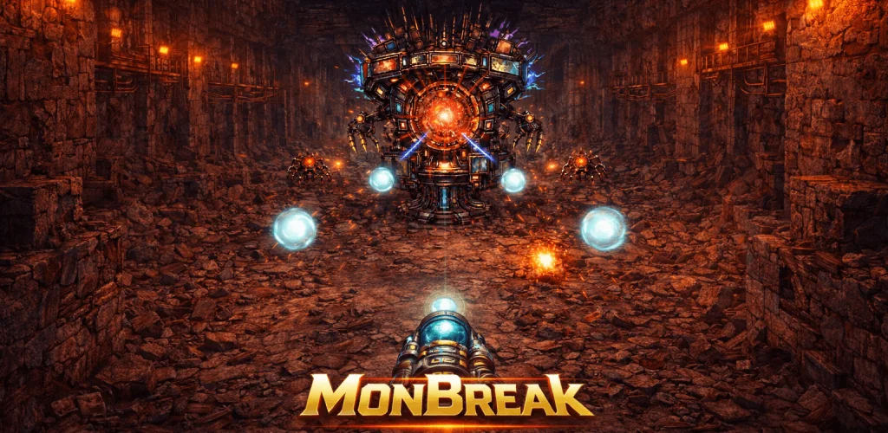
정확한 각도로 공을 발사해 적과 장애물을 연속으로 타격하는 모바일 액션 게임입니다. 짧은 조작으로 이해할 수 있지만 반사 경로와 발사 각도를 판단해야 하는 플레이를 목표로 제작했습니다.
게임 기획 · 시스템 구현 · UI · 밸런스 · 빌드 · 출시 · 업데이트
스토리 · 업그레이드 · 하드 · 무한 모드
요구사항 분해 · 기능 구현 · 리팩터링 · 문서화
Unity 6 · C# · Codex · Unity MCP · Android
Codex가 만든 결과를 그대로 채택하지 않고 직접 코드를 검토했으며, 최종 구조와 게임성, 실제 기기 빌드는 직접 검증했습니다.
02 · AI PRODUCTS
Kotlin·Android Studio와 Unity를 사용해 만든 게임과 앱
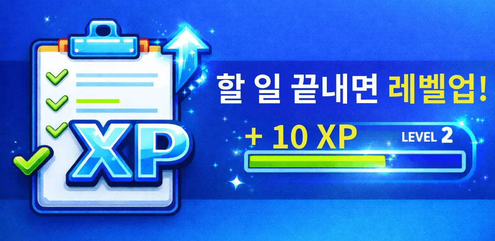
할 일을 퀘스트처럼 완료하고 XP, 레벨, 연속 기록으로 루틴을 이어가도록 만든 생산성 앱입니다.
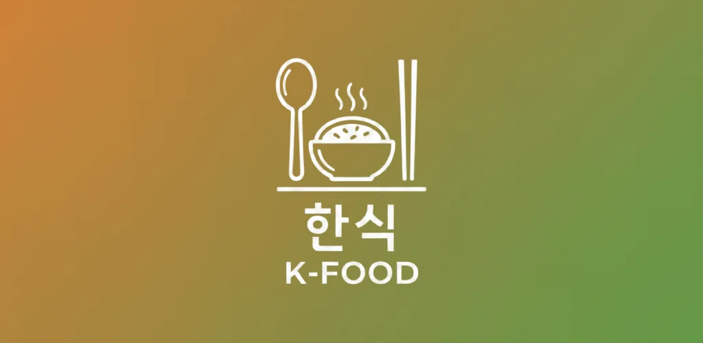
상황이나 보유 재료를 기준으로 한식 메뉴를 추천하고 선택한 메뉴의 레시피 검색으로 연결하는 앱입니다.
고양이 캐릭터가 하루 한 번 포춘쿠키를 열어 짧은 운세 메시지를 보여주는 캐주얼 앱입니다.
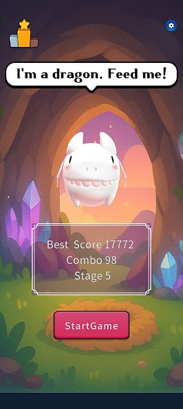
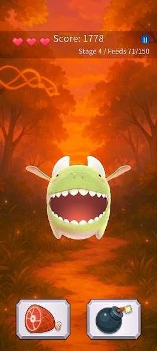
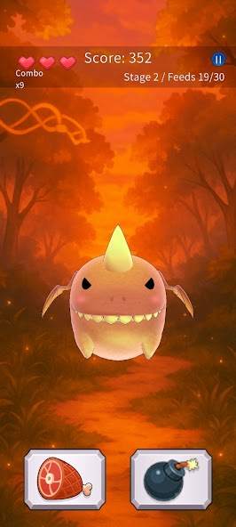
계속 위치가 바뀌는 먹이 버튼과 폭탄 버튼을 구분해 드래곤에게 먹이를 주는 짧은 반응형 모바일 게임입니다.
03 · AI DEVELOPMENT
AI 사용량이 아니라 실제 개발 과정과 검증 책임을 보여줍니다.
제품이 해결할 문제와 사용자가 반복해서 사용할 이유를 먼저 정합니다.
Codex와 요구사항을 작은 기능과 검증 가능한 작업으로 나눕니다.
Codex가 기능 구현과 수정 작업을 진행하고, 작업 결과를 바탕으로 다음 요청과 우선순위를 정합니다.
Unity 에디터와 Android 기기에서 플레이하고 빌드 오류와 UX 문제를 확인합니다.
스토어 등록과 정책 대응, 현지화, 업데이트, 마케팅까지 이어갑니다.